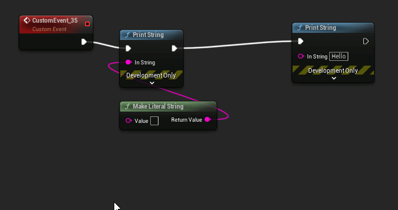

Command List
Blueprint Assist hotkey menu
- Open a menu which displays the hotkeys for the plugin
CTRL + SHIFT + F1

Open window menu
- Search and open a menu or setting with
CTRL + SHIFT + K

Select pin
-
Use the
ArrowKeysto move the selected pin -
Selecting a node will select the top-right execution pin
-
You can also select a pin by left-clicking on it

Select node
- Select a node using
CTRL + ArrowKeys

Open blueprint creation menu
- Press
Tabto open the blueprint creation menu. With a pin selected it will create the menu for the pin

Format node
- With a node selected press
Fto format the block of nodes - If the block of nodes has an event node, it will use it as the root node
- Two styles for parameters:
Helixing: Parameter nodes are placed belowLHS (Left-hand side): Parameter nodes are placed on the LHS of the node
- There are commands to forcing a formatting style (unbound by default)
- Format with Helixing
- Format with LHS (left-hand side)
- Important settings:
Treat delegates as execution pins (default: true): When disabled, this will ignore linked delegate pins (which are directly connected to custom events). You may want to disable this if you prefer your custom events to be manually positioned.Apply comment padding (default: true): Uses comment box bounds when formatting. Use this along with the AutoSizeComment plugin, otherwise disable this.Globally disable auto formatting: Disable all auto formatting behaviour

Format node selectively
- With multiple nodes selected press
Shift + Fto format only the selected nodes - If you have a single node selected, this command will selectively format the node tree to the right

Format all events
- Press
CTRL + Rto format all event nodes on the graph - See setting
Format All Styleto choose the method of layout:Simple: Event nodes are sorted by height and placed in a single columnSmart: Dynamic columns are created by estimating the width of all linked nodes in the event and then sorted by heightNode Type: Columns are created based on the node type{ SpecialRootNodes, ActorEvents, CustomEvents, InputEvents, ComponentEvents, OtherEvents }
- Blocks can be reordered by moving the height of the event node above other blocks.

Delete and link
- With node(s) selected press
SHIFT + DELto delete the nodes while preserving the links

Cut and link
- Functionally the same as
Delete and Linkabove but also copy the selected nodes to your clipboard. Default toCTRL+SHIFT+X.
Connect unlinked pins
- With a node selected, press
Qto connect unlinked pins to nearby nodes

Link nodes between wires
- With a node selected, hover a wire or pin and press
CTRL + Qto link the node

Link to hovered pin
- Select a pin, then hover another pin and press
CTRL + SHIFT + Qto link the two pins

Disconnect selected wire or pin
- Hover a wire or pin and press
Dto disconnect

Disconnect node execution
- Select a node and press
ALT + Dto disconnect node execution

Disconnect all pins
- Select a node and press
ALT + SHIFT + Dto disconnect all pins

Toggle context sensitive
- With the blueprint creation menu open, press
CTRL + Tto toggle context sensitive

Swap node
- With a node selected, press
CTRL + SHIFT + (Left / Right)to swap the node execution left or right - By default the swap node command will break looping connections which were created after swapping. See setting:
Blueprint Assist Advanced > RemoveLoopingCausedBySwapping

Swap connection
- With a pin selected, press
CTRL + SHIFT + (UP / DOWN)to swap the pin connection
Edit selected pin value
- Press
CTRL + Eto start editing the value of the selected pin - Pressing the hotkey again will move to the next editable value on the pin (for example when editing the Delta Location Vector)

Switch workflow mode
- Press
ALT + Oto switch workflow mode. This is mainly for AnimBP, WidgetBP and BehaviorTrees - In the AnimBP, it will open a menu since there are more than 2 modes to be selected from
Edit details menu
- Pressing
CTRL + SHIFT + Ewill bring up a menu with a list of variables in the Details panel - Selecting an item in the menu will bring keyboard focus to that variable (boolean variables will be toggled)

Zoom to node tree
- Pressing
CTRL + Equalswill zoom to fit the node tree (all nodes connected to the current node)

Add Symbol menu
- Pressing
CTRL + SHIFT + Awill open a menu allowing you to add a new graph, function macro, variable or event dispatcher

Go to symbol menu
- Pressing
CTRL + Gwill open a menu allowing you to bring viewport focus to any function / macro / graph / event

Focus search box
- Pressing
CTRL + Fwill focus the first found search box - Searches relative to the widget under your mouse cursor
Open file menu
- Press
CTRL + Tildeto quickly search and open files in the editor - Allows for filtering for directory A and asset type B
- Uses the asset search plugin
Find in files menu
- Press
CTRL + ALT + Fto search through files in the editor. Useful for searching for blueprint nodes on graphs or pin values. - Allows for filtering via asset type and directory
- Uses the asset search plugin
Select variable menu
- Pressing
CTRL + SHIFT + Gwill open a menu allowing you to focus a variable in the blueprint

Open context menu for pin
- Pressing
CTRL + Mwill bring up the pin actions for the selected pin

Open context menu for node
- Pressing
CTRL + SHIFT + Mwill bring up the node actions for the selected node

Duplicate variable node
- Pressing
CTRL + SHIFT + Vwill duplicate a variable node for each of it's links

Merge selected nodes
- Pressing
ALT + SHIFT + Mwill merge the selected nodes
Replace node
- Replace the selected node with a new node by pressing
CTRL + H

Shift camera
- Move the camera using
SHIFT + Arrow Keys
Toggle nodes
- Disabled or enable selected nodes using
CTRL + \

Split and recombine pin
- Split hovered or selected pin using
ALT + Q - Recombine using
ALT + CTRL + Q

Rename selected node
- Rename selected variable or macro by pressing
F2
Edit node comment
- Edit the text in a node comment bubble by pressing
SHIFT + F2

Group nodes
- Group nodes so they are locked and move together
ALT + G - Ungroup nodes with
ALT + CTRL + G - Holding down any key while dragging the nodes will stop the group movement
Settings
OnlyDrawGroupOutlineWhenSelectedto only draw the outline when a node is selectedDrawNodeGroupFillto also highlight the nodes inside the group

Toggle lock nodes
- Lock nodes so they are ignored by the Blueprint Assist formatter
ALT + L
Experimental
- Currently the formatter doesn't work very well with this. Any downstream nodes will also be ignored.
- When using this I suggest you use
Selective Formatting (Shift+F)

Toggle node purity
- Toggle the execution pins on a node if applicable. Handles
CastandVariable GetnodesALT + SHIFT + G
Toggle node advanced display
- Toggle any advanced display pins on the node. Most commonly used for the
Print StringnodeALT + CTRL + A
Expand selection in direction
- Using the hovered node as the root, expand the selection in the direction
Shift + Zfor Left,Shift + Xfor Right
Refresh node size
-
In order for the plugin to work correctly, we must save the size of node. However there may be cases where the plugin fails to detect a size change. If your blueprint graph has overlapping nodes it is likely due to this.
-
Select the incorrect nodes (I suggest simply selecting all the linked nodes) and press
CTRL + SHIFT + Rto refresh the sizes -
If you still have formatting issues, please report this on github
Navigate tab history
Works the same as pressing the thumb buttons on your mouse to go back / forward in tab history
Only for Blueprint Graphs. Do not rebind to use CTRL in the keyboard shortcuts, it will not work!
- Go Forward in Tab History
ALT + HOME - Go Back in Tab History
ALT + END
Tab Switcher Menu
- Open a menu where you can navigate the editor's open tabs with
CTRL+SHIFT+TAB
Go to Parent Class Definition
- Navigate to the current asset's parent class in the Unreal or code editor with
CTRL + SHIFT + B
Straighten hovered pin
- Straightens all pin connections for the hovered or selected pin
UNBOUND